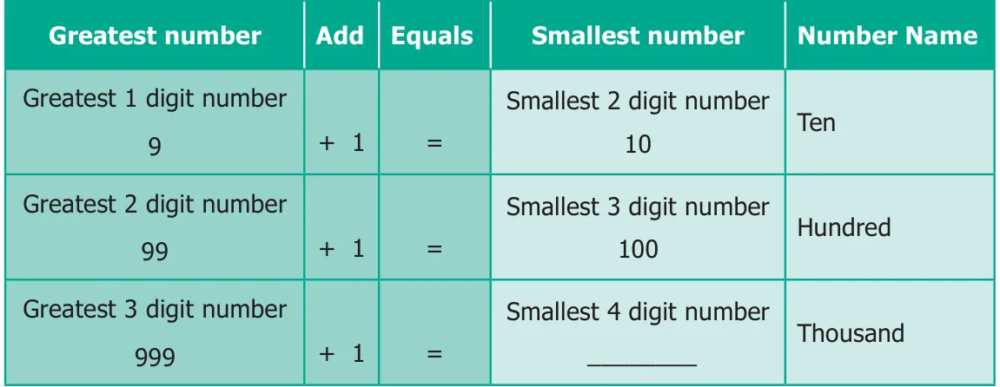
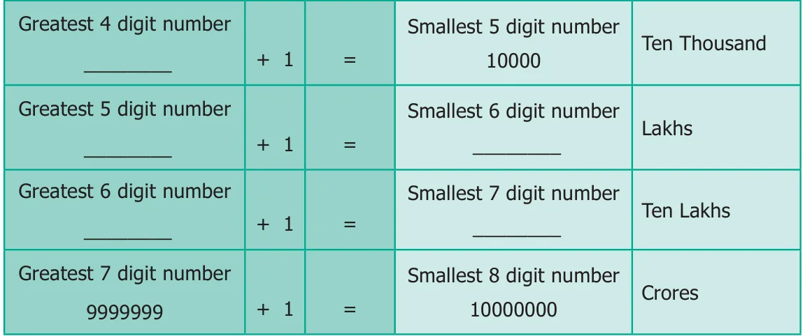
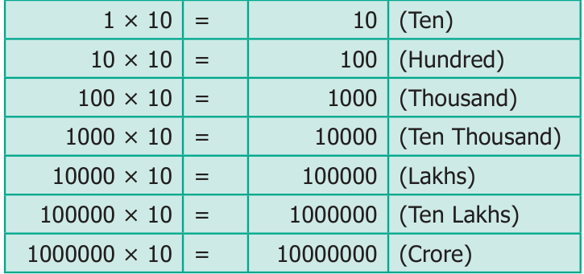

Now, we learn the formation of large numbers. Let us build and complete the number tower by observing the pattern of numbers.


We can observe that in every row the smallest number column has an additional zero compared to the previous row. You have read in lower classes about place value system. In this system (which was invented in India and spread to other countries!), the number 10 plays a very important role. It is shown in the following table.

While each new row gives a number 10 times bigger, what happens if we skip and go 2 rows below. Numbers would be 100 times bigger.
For example, \(1000 = 100\) times 10, or Thousand has “hundred tens” in it.